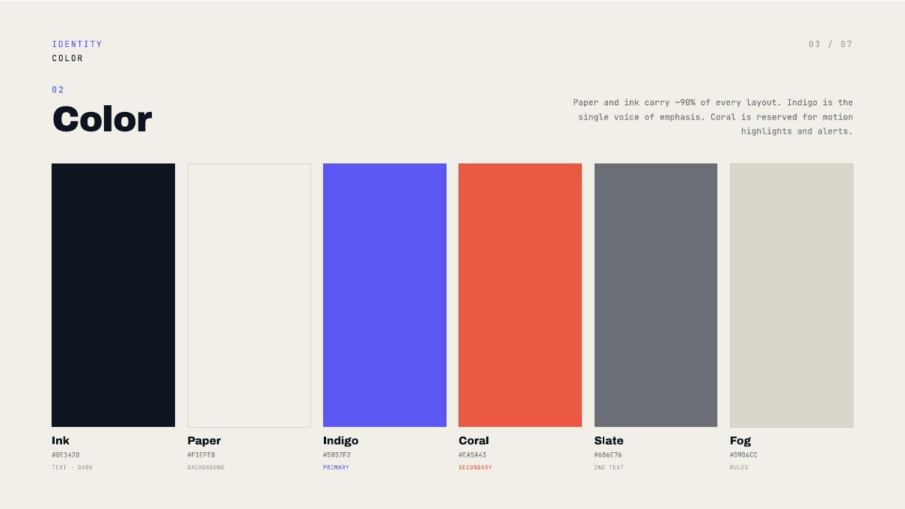

Influence without a design brief
This is the shortest case and the only one that isn’t product design. It’s here because it shows how I work when nobody tells me what to measure, and how I build a case in front of the most senior people in a company.
I killed three quarters of my own segmentation
I segmented into four verticals — government contracting, healthcare, vertical software and fintech — and tested them. Three didn’t respond. Government outbound was formally archived on May 19 with a diagnosed reason: there was no sector-specific content to take to market.
So government came back through content instead. By July the government newsletter was the main owned channel — 224 of 375 contacts. The first attempt failed, I identified why, and the vertical won on the second try by a different route.
One recording, four returns
The founders didn’t want to invest in a podcast. I didn’t defend it as brand-building; I defended it on production economics. One recording yields four things: content, networking with the guests, material for campaigns and digital presence. I formalized it as three distinct outputs, not one: a 15-minute cut for YouTube, five sales teasers for prospects and three clips for the guest to post on their own profile.
It was approved and produced: Art of Possible, with a brand book, a recording playbook, Episode 1 and a clip-repurposing system.


Small rules with a reason
- Burned-in captions, always. People watch muted. Accessibility as the starting point, not a checkbox.
- Guests approve content before it’s published. It costs speed and editorial control; it buys a guest who’s comfortable sharing. Designing for a relationship, not just a deliverable.
- A rate card I wrote. I scoped post-production, negotiated the vendor and managed the budget.
- One editorial template for every post: a single number, the mechanism behind it, what it means for the reader and a closing line that reframes it — with the chart form matched to the data, like a 100-square grid for “40 of every 100 projects.”

Built to run without me
The September 4 handoff mapped every folder, the status of each front, open items, cadences to keep and tool transfers. Six things had been archived, each with a written reason. And the three bottlenecks that weren’t mine to solve — a deferred CRM decision, a domain dependency and the podcast’s open cost — were framed as decisions and unblocks the company needed, not tasks I owed.